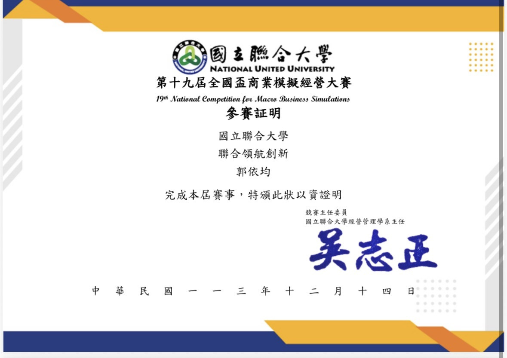
出來乍到
我們分工合作一起完成第十九屆全國盃商業模擬經營大賽，從中除了得到了名次，還獲得了我們的友誼，雖然只獲得了佳作，但是過程比結果更來的重要，最後能有現在的成果，是大家一直跌跌撞撞、四處碰壁，但始終不畏失敗的辛苦結晶。
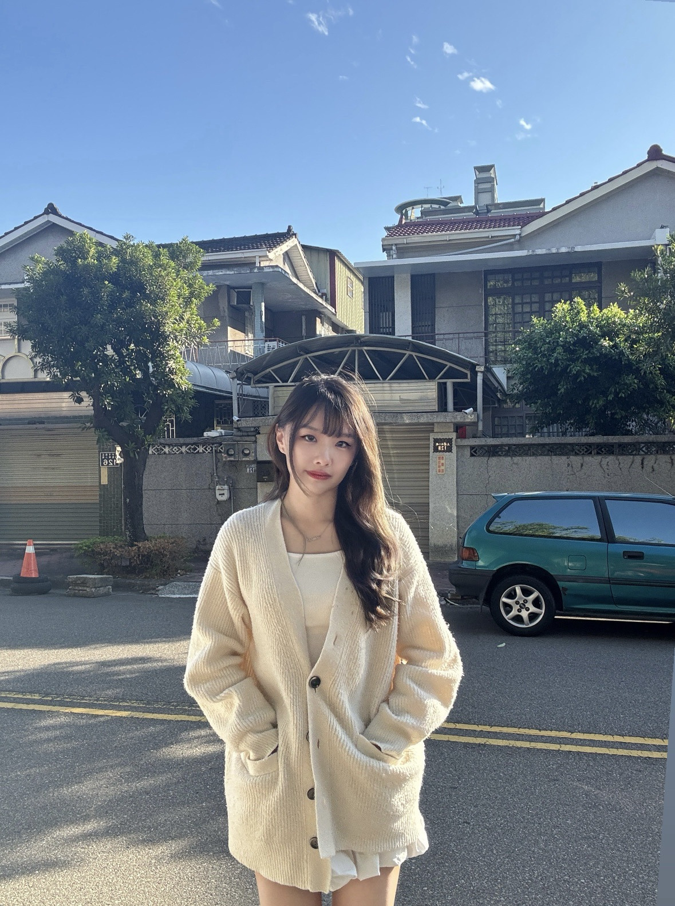

我們分工合作一起完成第十九屆全國盃商業模擬經營大賽，從中除了得到了名次，還獲得了我們的友誼，雖然只獲得了佳作，但是過程比結果更來的重要，最後能有現在的成果，是大家一直跌跌撞撞、四處碰壁，但始終不畏失敗的辛苦結晶。
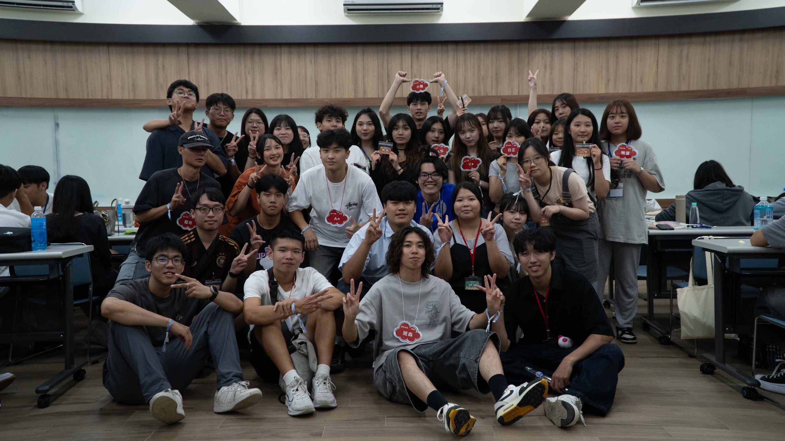
參與系學會迎新活動，我負責現場支援與新生引導，從前期準備、活動執行到事後檢討都有參與。在準備階段，我學習到活動流程規劃與分工的重要性，也體會到團隊溝通與時間管理的必要性。活動當天，我協助動線引導與關卡支援，面對現場狀況時學習如何冷靜應對並即時協助解決問題，提升了臨場反應與溝通能力。透過活動後的檢討，我了解活動中需要改進的地方，例如流程銜接與資訊傳遞，並學會從經驗中反思與調整。
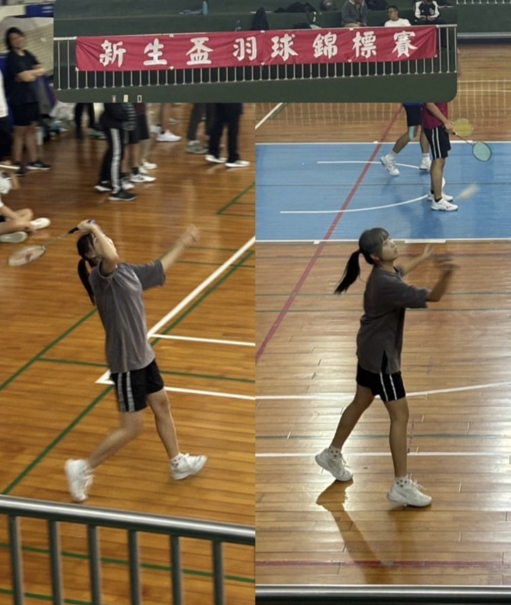
這次參與系羽新生盃，讓我第一次實際體驗團體比賽的節奏與壓力。從一開始不熟悉隊友，到比賽中逐漸學會溝通與配合，也更能在緊張時穩定心態。雖然過程中有失誤，但透過隊友互相鼓勵與調整，讓我更了解團隊合作的重要性，也累積了寶貴的比賽經驗。
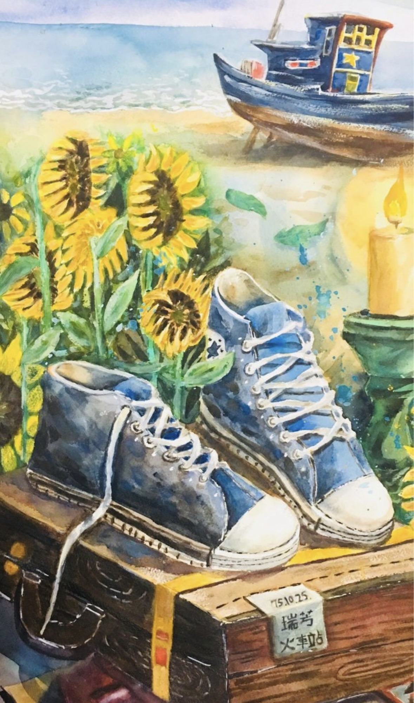
透過繪畫，我學會觀察細節與發揮創意，也能在創作過程中培養耐心與專注力。從構圖、配色到完成作品，每個步驟都需要不斷嘗試與調整，讓我更加了解自己的想法，也提升了解決問題與表達想法的能力。
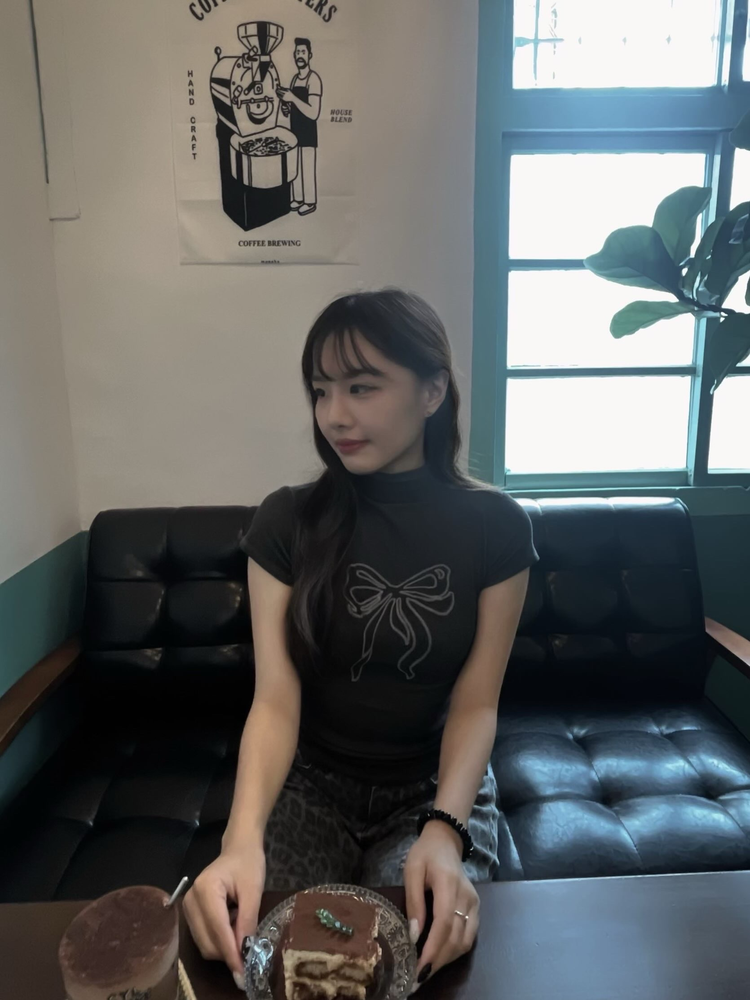
姓名：郭依均
就讀：國立聯合大學 經營管理學系
個人標語：「從經營管理出發，探索資訊與知識的價值。」
個性：謹慎、細心、負責任
興趣：畫畫、健身、游泳、音樂
學習特色：喜歡透過實際操作與問題解決學習
我們分工合作一起完成第十九屆全國盃商業模擬經營大賽，從中除了得到了名次，還獲得了我們的友誼，雖然只獲得了佳作，但是過程比結果更來的重要，最後能有現在的成果，是大家一直跌跌撞撞、四處碰壁，但始終不畏失敗的辛苦結晶。
參與系學會迎新活動，我負責現場支援與新生引導，從前期準備、活動執行到事後檢討都有參與。在準備階段，我學習到活動流程規劃與分工的重要性，也體會到團隊溝通與時間管理的必要性。活動當天，我協助動線引導與關卡支援，面對現場狀況時學習如何冷靜應對並即時協助解決問題，提升了臨場反應與溝通能力。透過活動後的檢討，我了解活動中需要改進的地方，例如流程銜接與資訊傳遞，並學會從經驗中反思與調整。
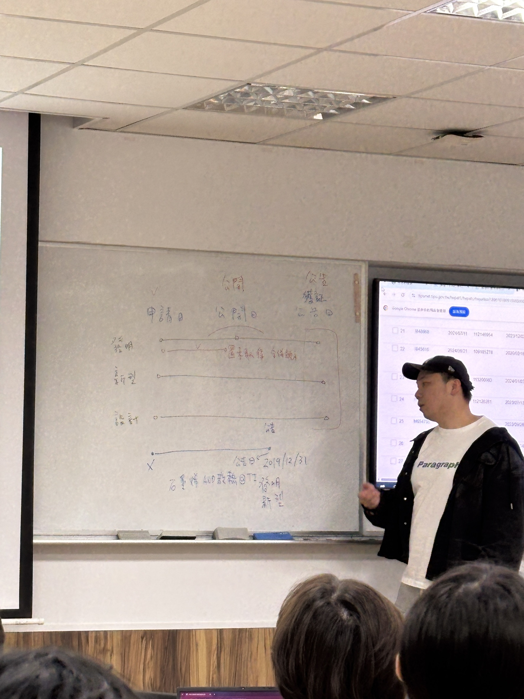
課前老師提醒這門課有困難度也很枯燥難懂，但是經過我幾週下來的學習，與老師豐富的教學經驗，讓我對專利分析完全改觀，加上課餘時間我主動找同學學習，期中考考出了及格的成績。
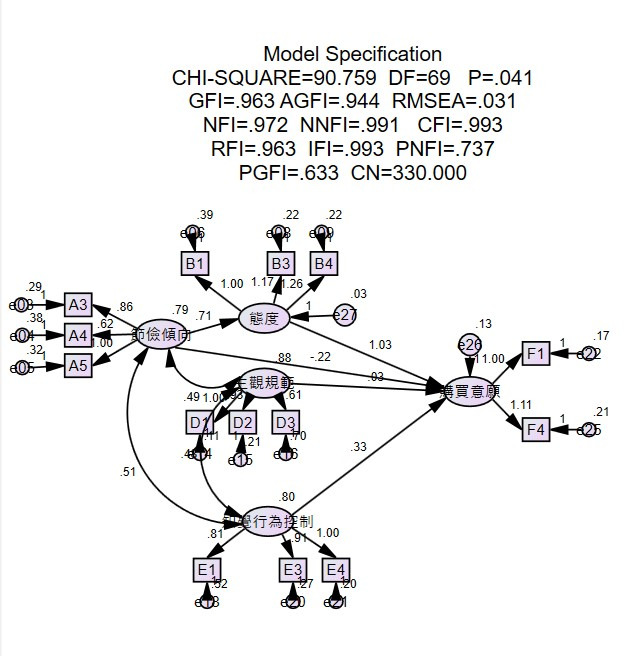
很榮幸我的國科會大專生研究計畫「醜食文化」順利通過。透過這次研究，我從題目發想到文獻蒐集、問卷設計及資料分析，學習到完整的研究流程，也更了解如何將生活中的現象轉化成值得探討的研究問題。研究過程雖然遇到不少困難，但也讓我提升了分析問題、解決問題及整理資料的能力。這次經驗不僅是對自己的肯定，也讓我對研究與未來學習有更多信心。
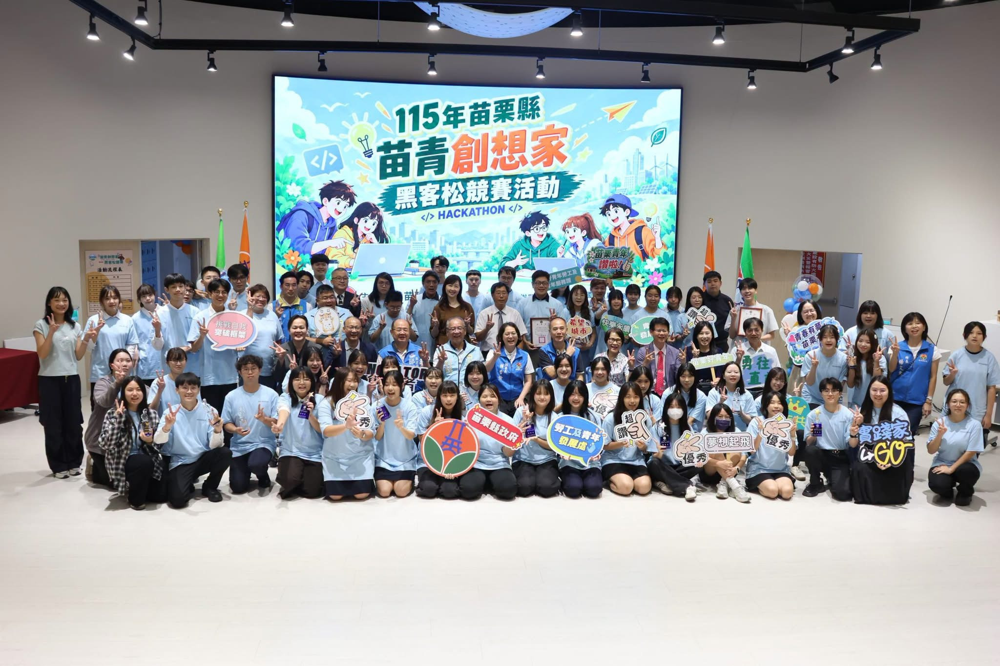
參加黑客松活動的過程中，我體會到團隊合作與問題解決的重要性。活動需要在有限的時間內討論主題、發想創意並完成成果，過程中遇到不同意見時，也學習如何溝通與分工。透過這次經驗，我不僅提升了自己的應變能力，也更了解團隊合作需要互相配合與共同完成目標。這次活動讓我發現，面對不熟悉的問題時，勇於嘗試並從過程中學習，比一開始就要求自己做到完美更重要。
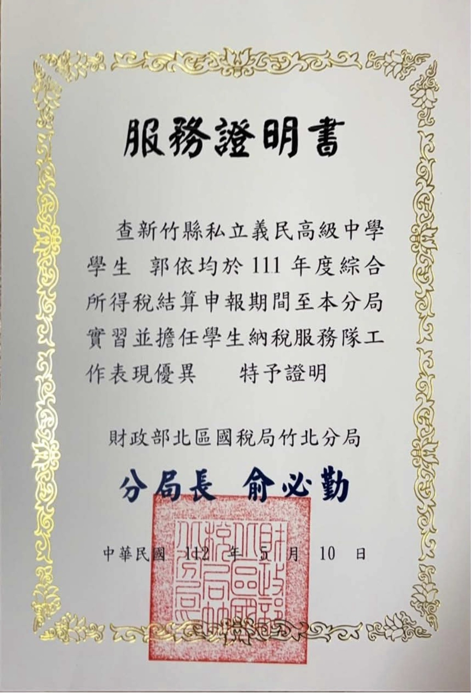
我報名政府圖書館暑期服務，是希望透過參與公共服務工作，了解圖書館的運作與服務內容，並培養自己的責任感與服務精神。此外，我也想提升與民眾溝通及問題處理的能力，透過實務經驗累積行政與服務相關經驗，為未來學習與職涯發展奠定基礎。
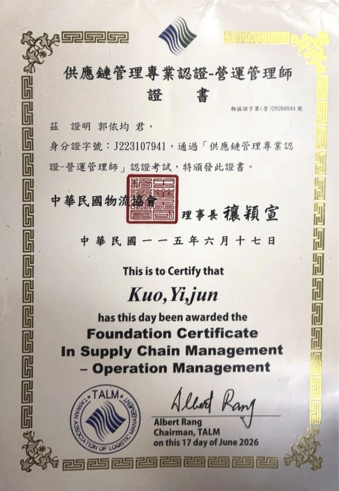
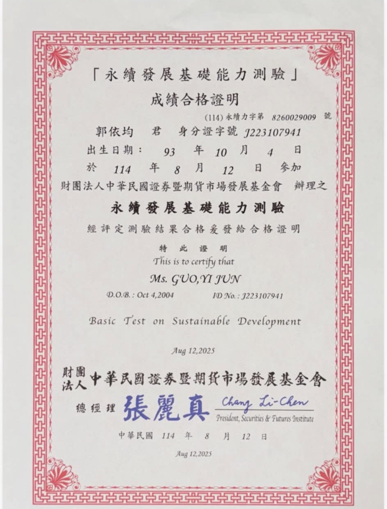
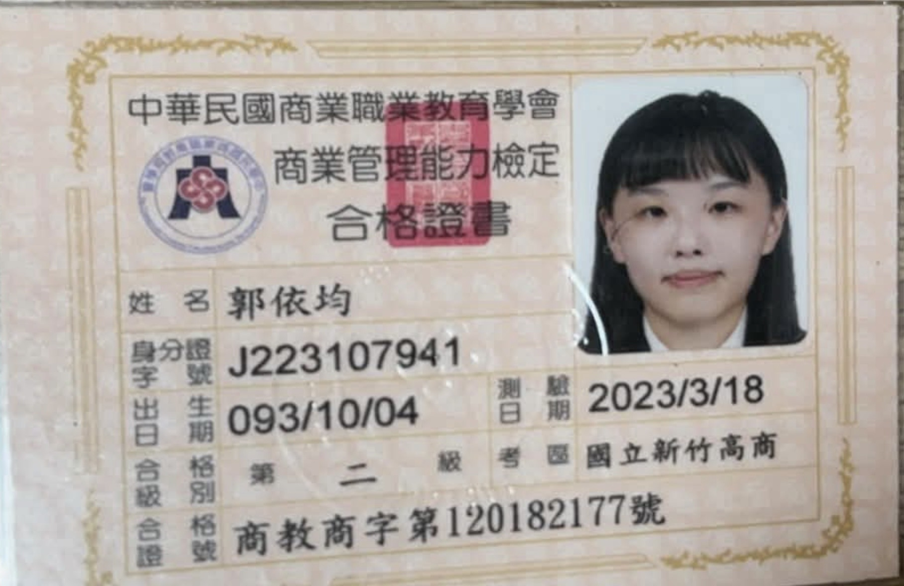
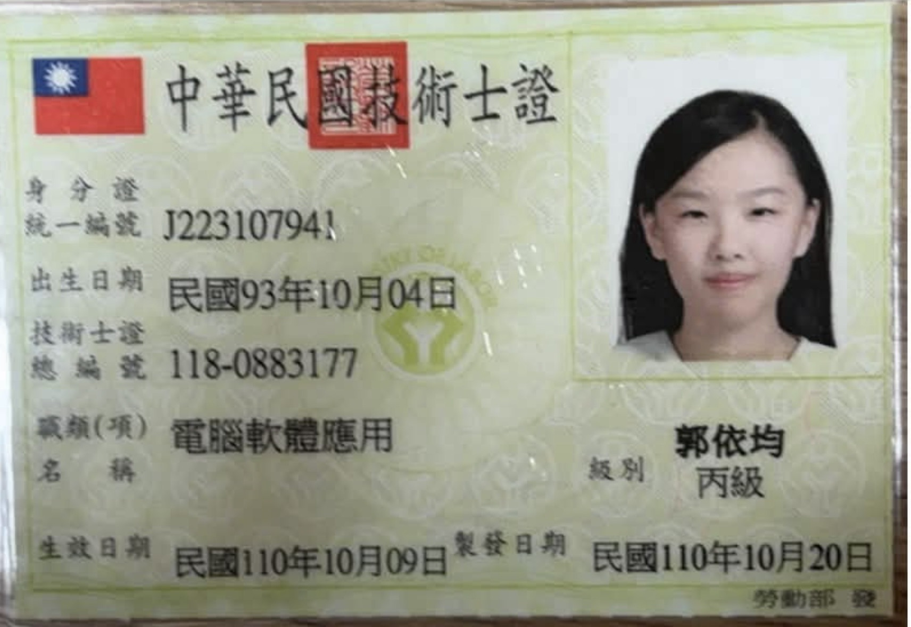
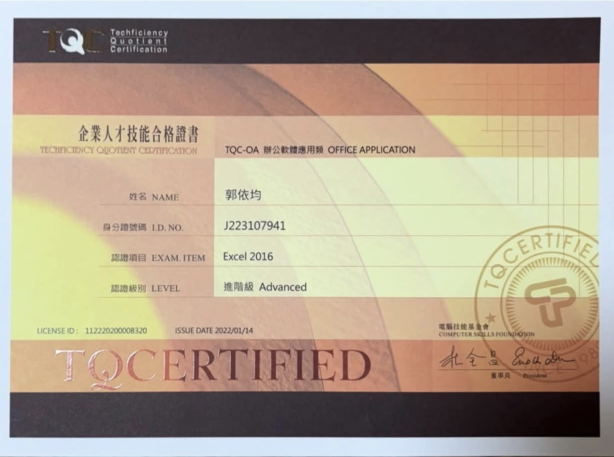
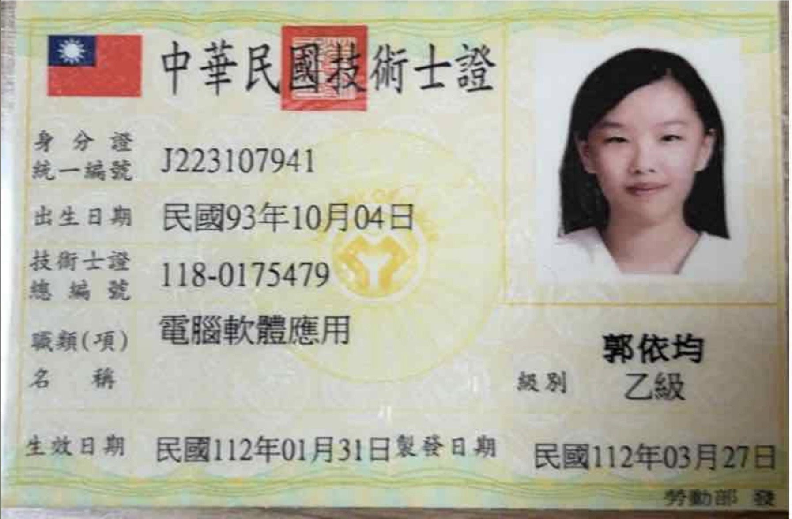
這次參與系羽新生盃，讓我第一次實際體驗團體比賽的節奏與壓力。從一開始不熟悉隊友，到比賽中逐漸學會溝通與配合，也更能在緊張時穩定心態。雖然過程中有失誤，但透過隊友互相鼓勵與調整，讓我更了解團隊合作的重要性，也累積了寶貴的比賽經驗。
透過繪畫，我學會觀察細節與發揮創意，也能在創作過程中培養耐心與專注力。從構圖、配色到完成作品，每個步驟都需要不斷嘗試與調整，讓我更加了解自己的想法，也提升了解決問題與表達想法的能力。
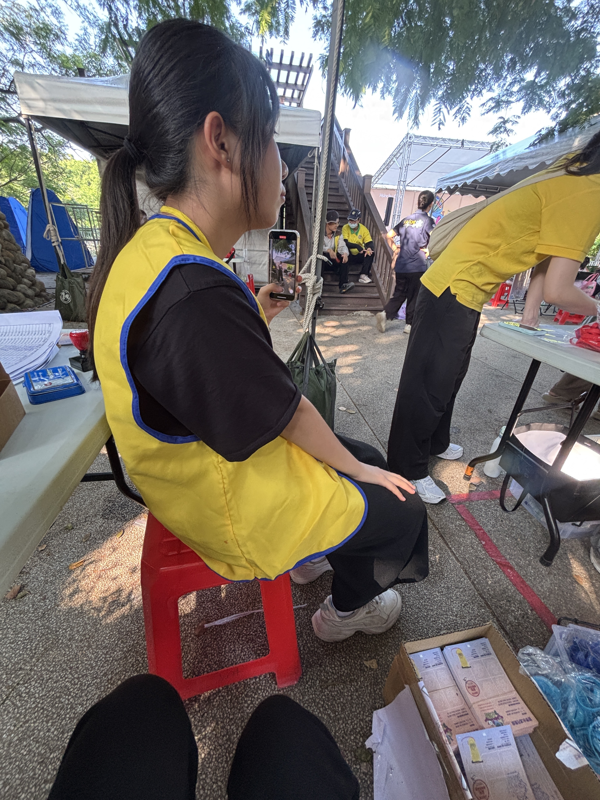
大學期間，我曾接觸不同類型的打工工作，從中學習與人溝通、團隊合作及處理問題的能力。不同的工作環境也讓我更了解職場的運作方式，培養出責任感與耐心。透過打工經驗，我學會妥善安排時間，也更能適應不同的工作內容與環境。